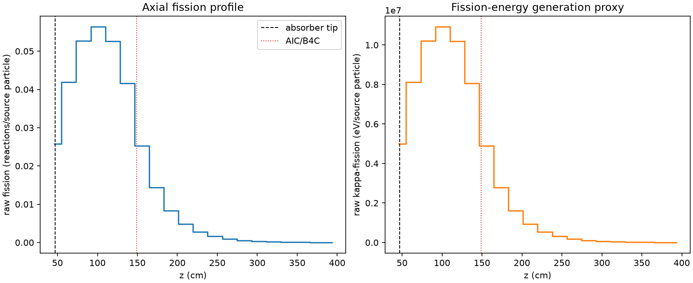
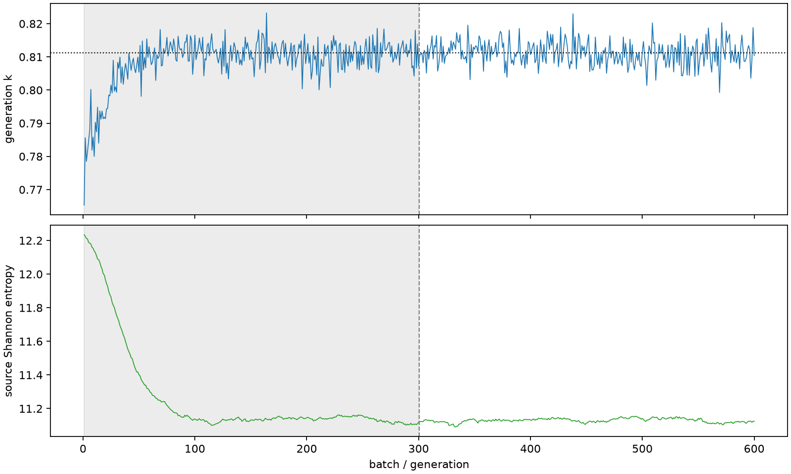

| field | value |
|---|---|
| experiment | V2-STAGE_256_OGRENCI_01-0005 |
| k | 0.8112717868440285 |
| MC standard error | 0.00016260228391091667 |
| seconds | 990.340191588999 |
| acceptance | not_assessed |
| convergence | review_required |
Completed is output integrity only; physical and statistical review required. Zero tallies do not prove zero production or zero uncertainty.
| diagnostic | value |
|---|---|
| geometric fuel voxels | 5280 |
| zero fission tally voxels | 0 |
| low signal fuel voxels | 690 |
| low signal fission share | 0.00021758718365041935 |
| low signal kappa share | 0.00021761115057795008 |
| important fission share | 0.950092091200882 |
| previous filter included | 4590 |
| duration estimate s | 1562.5173488400023 |
| actual minus estimate s | -572.1771572510033 |
| fission relative MC error | statistics |
|---|---|
| all_geometric_fuel | {"voxels": 5280, "positive_mean_voxels": 5280, "zero_mean_voxels": 0, "undefined_relative_error_voxels": 0, "median": 0.026238086457493284, "p95": 0.3343643072448292, "maximum": 0.7427219421978065} |
| low_signal | {"voxels": 690, "positive_mean_voxels": 690, "zero_mean_voxels": 0, "undefined_relative_error_voxels": 0, "median": 0.3028480808130261, "p95": 0.5264386277309401, "maximum": 0.7427219421978065} |
| important_95pct | {"voxels": 2197, "positive_mean_voxels": 2197, "zero_mean_voxels": 0, "undefined_relative_error_voxels": 0, "median": 0.007969667101219338, "p95": 0.014309016706258091, "maximum": 0.019483473885001587} |
| outside_previous_filter | {"voxels": 690, "positive_mean_voxels": 690, "zero_mean_voxels": 0, "undefined_relative_error_voxels": 0, "median": 0.3028480808130261, "p95": 0.5264386277309401, "maximum": 0.7427219421978065} |
| kappa_fission relative MC error | statistics |
|---|---|
| all_geometric_fuel | {"voxels": 5280, "positive_mean_voxels": 5280, "zero_mean_voxels": 0, "undefined_relative_error_voxels": 0, "median": 0.02619203817169969, "p95": 0.3339471693466165, "maximum": 0.7419200749644962} |
| low_signal | {"voxels": 690, "positive_mean_voxels": 690, "zero_mean_voxels": 0, "undefined_relative_error_voxels": 0, "median": 0.3024194600988698, "p95": 0.5259139951110422, "maximum": 0.7419200749644962} |
| important_95pct | {"voxels": 2197, "positive_mean_voxels": 2197, "zero_mean_voxels": 0, "undefined_relative_error_voxels": 0, "median": 0.007957536363778335, "p95": 0.014283615704861391, "maximum": 0.01945323800028508} |
| outside_previous_filter | {"voxels": 690, "positive_mean_voxels": 690, "zero_mean_voxels": 0, "undefined_relative_error_voxels": 0, "median": 0.3024194600988698, "p95": 0.5259139951110422, "maximum": 0.7419200749644962} |
| axial bin | fission share | kappa-fission share |
|---|---|---|
| 1 | 0.07813380550492134 | 0.07812650746547735 |
| 2 | 0.12681526080068728 | 0.12681389413413824 |
| 3 | 0.1595116117747497 | 0.15951003750777062 |
| 4 | 0.17071092924527273 | 0.17070893007561522 |
| 5 | 0.1592461959779616 | 0.15924468208799702 |
| 6 | 0.12601173380191752 | 0.1260105698267944 |
| 7 | 0.07643830667383027 | 0.07644339414842145 |
| 8 | 0.04350134296292279 | 0.04350553785472437 |
| 9 | 0.025312841115741544 | 0.025315229587503214 |
| 10 | 0.014489733220701484 | 0.01449120109782721 |
| 11 | 0.00831501471978985 | 0.00831578534245306 |
| 12 | 0.0048596207127713596 | 0.004860057588299367 |
| 13 | 0.0029040182375632633 | 0.0029042680259650424 |
| 14 | 0.001705370403072951 | 0.0017054830716375026 |
| 15 | 0.0009506464257017658 | 0.000950755344088574 |
| 16 | 0.0005326944146819988 | 0.0005327298402532802 |
| 17 | 0.00028594207286295744 | 0.00028597945311609495 |
| 18 | 0.00016174600296141732 | 0.00016175275858880576 |
| 19 | 8.494864349479284e-05 | 8.49585852472824e-05 |
| 20 | 2.8237288393130836e-05 | 2.82462040818534e-05 |
Histories include the inactive-to-active transition at batch 300. kappa-fission approximates fission energy production, not total heat deposition.

